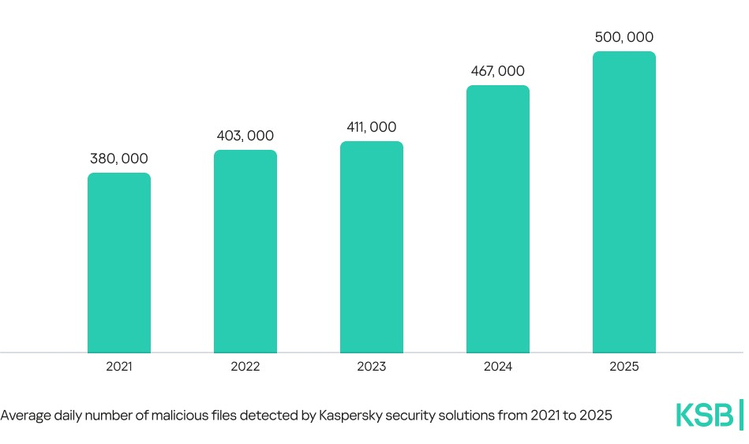

Waneye Financial Overview
Last updated: 2025-12-06 16:23 UTC


Financial Analysis Report
December 06, 2025 at 16:22Executive Summary
Key Highlights
- Market rally continues with soft September economic data boosting rate-cut expectations; S&P 500 rebalancing adds Carvana, CRH, Comfort Systems
- Netflix announces $83 billion acquisition of Warner Bros. and HBO Max, signaling major media consolidation and potential ad revenue synergies
- AI sector remains dominant with CoreWeave (+20.8%), UiPath (+35%), and Rubrik (+22.5%) surging on strong earnings and investments
- Federal Reserve's preferred inflation indicator (PCE) hits 2.8% in September, keeping pressure on monetary policy decisions
- Morgan Stanley shifts rate-cut view back to December after Powell's influence, reflecting ongoing Fed policy uncertainty
- Significant M&A activity: SoftBank in talks to buy DigitalBridge (+45%), Biocon moves to fully own biologics unit valued at $5.5 billion
- China's AI chip challenger to Nvidia soars 425% in market debut, highlighting geopolitical tech competition
- US consumers face average $105K debt burden, raising concerns about consumer spending resilience
- Layoff announcements hit highest level since pandemic despite improving consumer sentiment
- Trump administration policies impacting markets: potential income tax cuts funded by tariffs, fuel efficiency rollbacks, and housing investigations
Market Sentiment
Market Insights
Sector Analysis
Technology/AI
Extremely bullish with multiple stocks surging 20-35% on earnings and AI investments
AI remains market leadership driver; valuations becoming stretched; watch for potential rotationMedia/Entertainment
Major consolidation with Netflix-Warner deal creating streaming powerhouse
Increased competition for Disney, Amazon Prime; potential regulatory scrutiny; ad revenue opportunitiesFinancials
Mixed with rate-cut uncertainty; European banks driving recovery in Spain/Italy
Sensitive to Fed decisions; regional divergence between US and European financialsConsumer Discretionary
Polarized with dollar stores gaining higher-income shoppers while luxury faces headwinds
Trade-down behavior persists; selective opportunities in value retailEnergy/Commodities
LNG shortage concerns from Qatar; rare earths gaining on supply deals
Energy transition metals and clean energy stocks benefiting; traditional energy faces policy uncertaintyReal Estate
Supply shortages driving affordability issues in markets like Miami
Regional divergence; housing policy scrutiny increasing under Trump administrationKey Market Themes
- AI Dominance and Investment Frenzy
- Federal Reserve Policy Uncertainty
- Media Industry Consolidation
- Geopolitical Tech Competition (US-China)
- Consumer Debt and Spending Resilience
- M&A Activity Acceleration
- Labor Market Softening
- Trade and Tariff Policy Shifts
- Inflation Moderation but Still Elevated
- Sector Rotation from Non-AI to AI Companies
Risk Assessment
Federal Reserve Policy Misstep
Mitigation: Maintain balanced portfolio with duration hedge; focus on quality companies with strong balance sheetsAI Valuation Bubble
Mitigation: Diversify within tech; consider profit-taking on extreme gainers; add exposure to value sectorsConsumer Debt Burden Impact
Mitigation: Underweight consumer discretionary reliant on credit; focus on essential consumer staplesGeopolitical Tensions (US-China)
Mitigation: Diversify geographically; consider domestic-focused companies; monitor semiconductor supply chainsM&A Integration Risk
Mitigation: Avoid chasing M&A rumors; focus on companies with proven integration capabilitiesTrade Policy Volatility
Mitigation: Focus on companies with diversified supply chains; monitor tariff-exposed sectors like retailStrategic Recommendations
Investment Opportunities
Add exposure to AI infrastructure leaders
medium-termCoreWeave, UiPath, and Rubrik show strong momentum; AI spending continues accelerating
Consider media consolidation plays
long-termNetflix-Warner deal could trigger further M&A; ad revenue synergies undervalued
Position for S&P 500 rebalancing
short-termCarvana, CRH, Comfort Systems joining index will trigger forced buying
Defensive Strategies
Take partial profits on AI extreme gainers
short-termValuations stretched; Apollo warns public markets have little room for non-AI companies
Increase cash position ahead of Fed decision
short-termRate-cut timing uncertainty creates volatility; Morgan Stanley flip-flop indicates confusion
Add defensive consumer staples
medium-termConsumer debt burden may limit discretionary spending; dollar stores already seeing trade-down
Market Outlook
Short-term Outlook (1-3 months)
1-3 month outlook: Cautiously bullish with volatility expected around Fed decisions and year-end positioning. AI momentum likely continues but may see profit-taking. Netflix-Warner deal could boost media sector. Watch for Santa Claus rally if inflation data continues to moderate.
Long-term Outlook (6-12 months)
6-12 month outlook: Moderately bullish with selective opportunities. AI transformation continues but valuations need to normalize. Media consolidation reshapes entertainment landscape. European recovery could provide diversification benefits. Consumer resilience will be tested by debt burdens. Geopolitical tensions remain wild card.
Key Market Catalysts
- Federal Reserve December meeting (rate decision)
- Netflix-Warner deal completion and integration
- Q4 earnings season (January 2026)
- Trump administration policy announcements (tax, trade)
- China economic data and policy response
- AI chip supply/demand dynamics
- Consumer spending during holiday season
- European Central Bank policy decisions
Monitor Closely
- PCE inflation data (next release)
- Jobless claims and employment reports
- AI company earnings and guidance
- Consumer credit and default rates
- US-China trade relations
- Federal Reserve dot plot updates
- M&A deal flow and regulatory approvals
- Dollar strength and currency movements
- Oil and LNG price trends
- Housing market indicators
US Federal Reserve - Economy at a Glance
Policy Rates
- Federal Reserve: Rate not found
- European Central Bank: Rate not found
- Bank of England: Could not fetch rate (Request Error)
- Bank of Japan: Could not fetch rate (Request Error)
- Swiss National Bank: Could not fetch rate (Request Error)
- Bank of Canada: Rate not found
- Reserve Bank of Australia: 3.60%
- People's Bank of China: Rate not found
- Reserve Bank of New Zealand: Could not fetch rate (Request Error)
| Pair | Bid | Ask | Change |
|---|---|---|---|
| EUR/USD | 1.085 | 1.0852 | -0.0002 |
| USD/JPY | 155.2 | 155.23 | 0.05 |